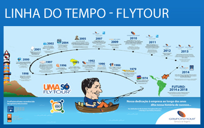

<p class="p-1">A história de sucesso do Grupo Flytour teve início em 1974, com a abertura de sua primeira empresa, a “Edo Representações Ltda.”.  A partir de 1979 passou a se chamar “Flytour Viagens e Turismo” e hoje é denominada "Flytour Travel Solution", atuando na consolidação e representação de companhias aéreas e atendendo às agências de viagens de todo o País. Hoje fornece soluções para mais de 4 mil agências de viagens em todo o Brasil.</p>

<p class="p-1">Em 1992, visando multiplicar o sucesso da Flytour, funda-se a Flytour Franchising, dando início à denominada Rede Flytour Business Travel Brasil. Em 2007 a Flytour adquire as operações da American Express Business Travel Brasil, passando a se chamar Flytour American Express Business Travel, divisão que atua no atendimento a clientes corporativos, gerenciando completamente as despesas com viagens a negócios, visando otimização de recursos e redução de gastos. Ao final de 2010 esta parceria estendeu-se à rede de franquias, que também passou a identificar-se como Flytour American Express Business Travel, atualmente Flytour American Express Serviços de Viagens.</p>

<div class="img-flutuar-direita"><a href="../comum/images/linha-do-tempo.jpg" target="_blank"></a></div>

<p class="p-1">No ano de 2006 o Grupo Flytour criou o Service Plus, divisão que atende clientes em 18 aeroportos do Brasil e oferece serviços de embarque, desembarque, entrega de bilhetes, documentos e vouchers, além da utilização da sala de apoio com toda a infraestrutura e tranquilidade que um passageiro pode desejar.</p>

<p class="p-1">A solidez e a credibilidade do Grupo contam ainda com o reconhecimento das maiores companhias aéreas e principais redes hoteleiras, somando em 2010 mais de 7,5 milhões de trechos aéreos e 1,8 milhão de diárias utilizadas em business travel. É com essa força que a Flytour Viagens inicia suas operações em 2012. A Flytour Viagens nasce para ser uma operadora que já conta com o apoio de mais de 5 mil agentes de viagens cadastrados no Grupo Flytour. Eles serão os responsáveis pela comercialização dos produtos nacionais e internacionais da divisão.</p>

<p class="p-1">Aos poucos, baseando suas atividades no perfeito atendimento, no aprimoramento tecnológico constante e na qualidade de seus serviços, o Grupo foi expandindo-se e hoje possui cinco divisões de negócios distintas, ocupando uma posição de destaque no mercado de turismo como a maior rede de agências de viagens do Brasil; quarta maior empresa do setor de turismo no País (segundo anuário de Turismo Exame 2007) e maior emissora de bilhetes aéreos da América Latina, segundo a revista Latino-Americana “Gerencia de Viajes”.</p>

<p class="p-1">O Grupo Flytour investe fortemente em treinamentos, mantendo sua força de trabalho capacitada e comprometida, oferecendo mais de 50 módulos de treinamentos a colaboradores e clientes através de seu departamento de “Gestão do Conhecimento” ou Academia Flytour.</p>

<p class="p-1">Hoje, o Grupo Flytour é composto por mais de 220 unidades de negócios e 2.600 colaboradores em todo o Brasil.</p>

